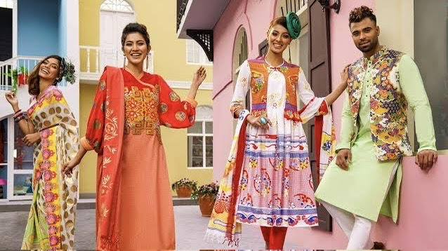
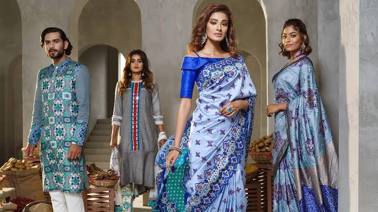

Ethical Sourcing
We believe in the power of ethical sourcing to create positive change. By partnering directly with artisans and cooperatives, we ensure fair wages and dignified working conditions. Our commitment to sustainability extends to our materials, with a focus on natural fibers and eco-friendly practices.
Beyond commerce, Aarong is a catalyst for social change. Through initiatives in education, healthcare, and skill development, we empower communities to thrive and prosper. Every purchase you make directly contributes to these efforts, making a meaningful difference in the lives of countless individuals.
Community Impact
Join us in celebrating the rich heritage of Bangladesh and supporting sustainable livelihoods. Follow us on social media, sign up for our newsletter, or visit us in-store to stay connected and be inspired by the beauty of craftsmanship and culture at Aarong. Established in 1978 as a humble initiative to empower rural artisans, Aarong has evolved into Bangladesh's leading lifestyle brand. Our journey is a testament to our commitment to preserving and promoting traditional crafts while fostering sustainable livelihoods for communities across the country.
